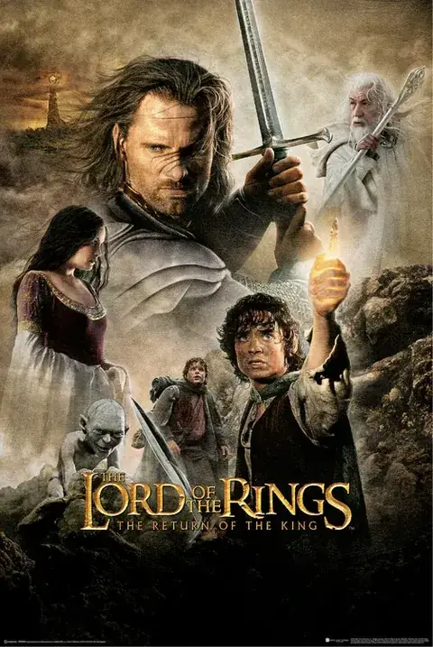
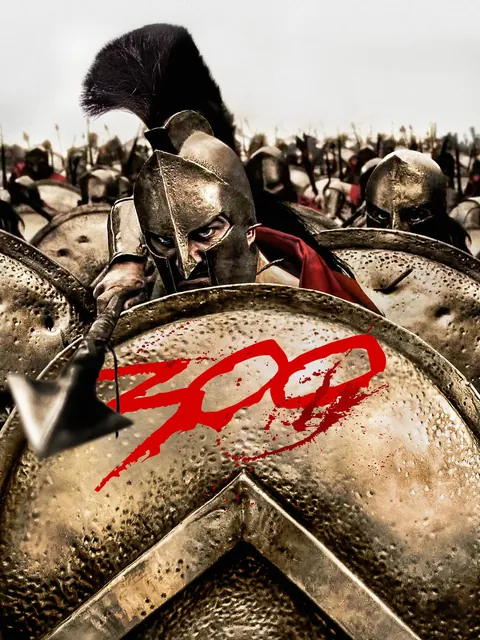
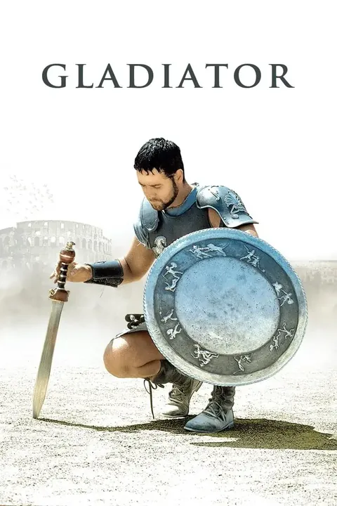
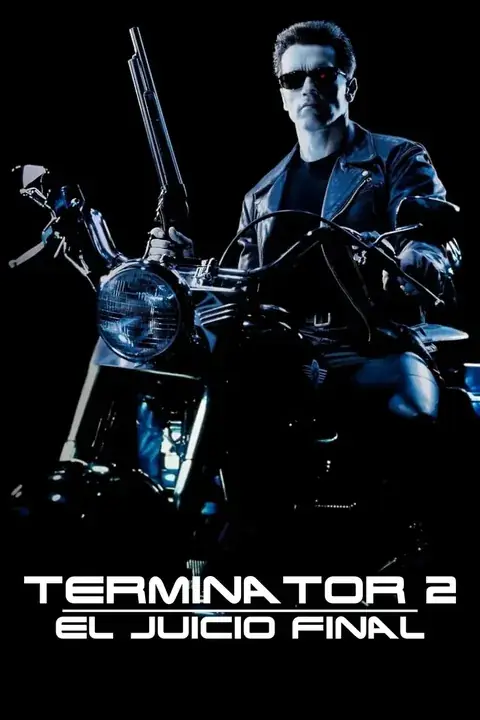
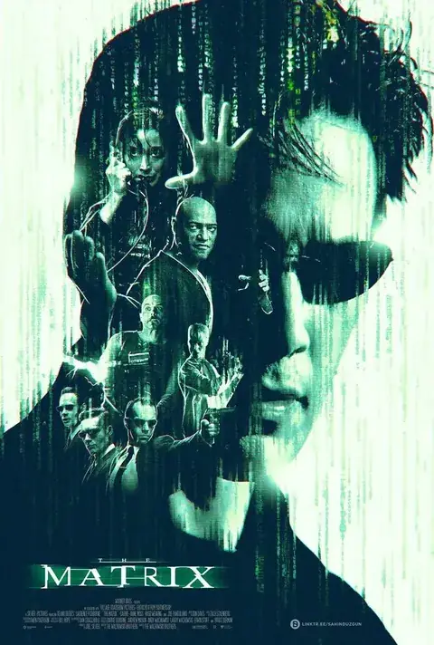
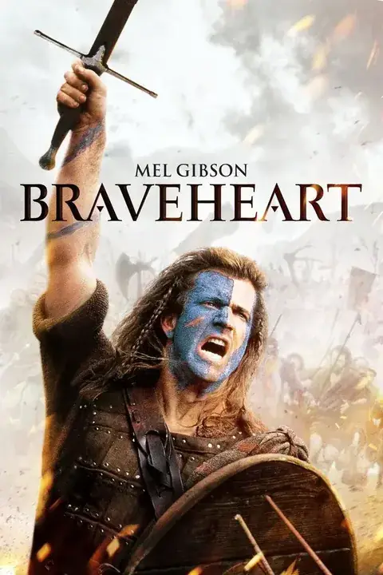
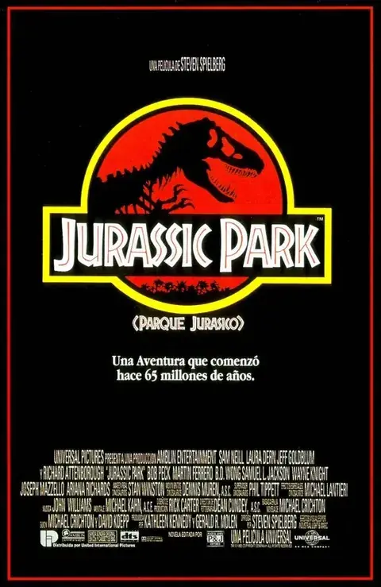
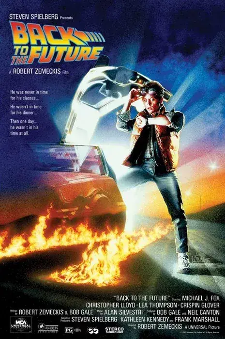

Mis películas favoritas
Gira el carrusel y toca una tarjeta para ver por qué me marcaron. Obras que definieron mi forma de entender la narrativa y lo visual.

El señor de los anillos
La cúspide absoluta del séptimo arte. Jackson no adaptó un libro: forjó una leyenda viva a base de barro, acero, la carga inmortal de los Rohirrim y la banda sonora de Howard Shore. Un viaje colosal donde hasta el detalle más pequeño pesa y la épica no es artificio, es pura alma.

300
Pura viñeta en movimiento: Snyder convierte el cómic de Miller en un festival de slow motion, sangre dorada y siluetas. No la veo por el rigor histórico, sino por lo que me enseñó de composición y ritmo. "¡This is Sparta!" sigue siendo mi ejemplo de que un plano bien coreografiado vale más que mil líneas de diálogo.

Gladiator
Ridley Scott rodó Roma como un óleo y le puso encima una venganza de familia. Maximus lo pierde todo menos la dignidad, y ese "lo que hacemos en vida resuena en la eternidad" me sirve de vara para casi todo. Crowe camina por la arena como si cargara un imperio entero encima.

Terminator 2
Cameron hizo lo imposible: convertir al asesino de la primera en el personaje más humano de la saga. Ver a un T-800 aprender a no matar, con el dilema de Skynet de fondo, me persigue como futuro programador. El pulgar en alto al final sigue valiendo más que cualquier discurso.

Matrix
Las hermanas Wachowski proponen que la realidad puede ser una interfaz y lo sostienen con una coreografía de acción inédita hasta entonces. Más que ciencia ficción, es una reflexión sobre la libertad, la percepción y el precio de saber. Sigue siendo la referencia cuando alguien pregunta qué es real.

Braveheart
Barro, gaitas y un discurso a caballo que eriza la piel cada vez que suena. Gibson convirtió la leyenda de William Wallace en el estándar definitivo de la épica visceral: batallas crudas sin artificios digitales y una pasión desmedida por la libertad que trasciende la pantalla.

Jurassic Park
La ambición genética desafía a la naturaleza en una isla remota donde la vida se abre camino. Spielberg redefinió el asombro cinematográfico y los efectos visuales para siempre.

Regreso al futuro
Un DeLorean a 88 mph, condensadores de fluzo y la paradoja de salvar tu propia existencia antes de que se agote el tiempo. Zemeckis y Gale construyeron una clase magistral de causa y efecto: cada frase del primer acto detona en el clímax con la precisión de un reloj suizo. La quintaesencia del cine de los ochenta que no envejece jamás.
Explorador de Cine
Busca cualquier película en el archivo de TMDB. Portadas oficiales, detalles y valoraciones.